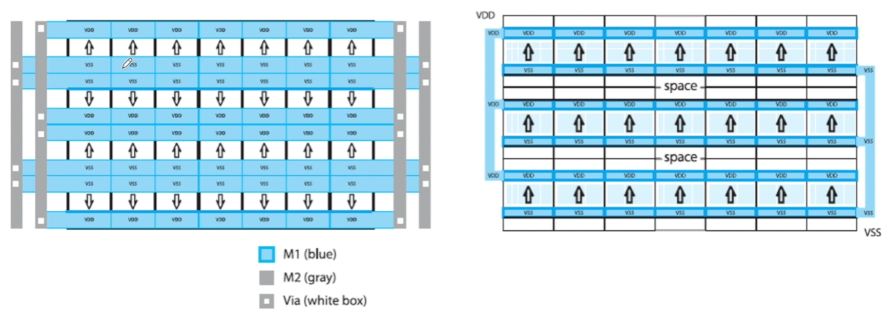
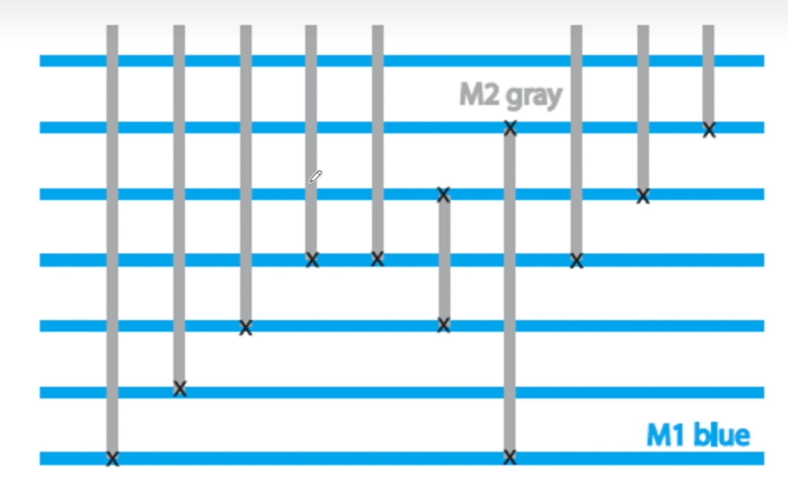

Layout-Day7-数字电路布局布线特点 发表于 2024-07-10 分类于 Layout 本文字数： 117 一.数字电路布局布线特点①数字电路会提供多个门结构（驱动能力不同的）它们可能分别标号X1、X2、X4、X8……，从左到右驱动能力增强，但是面积会变大 ②布局特点：$VDD$与$GND$交替 ③布线特点：垂直走线M1、M2的走线是相互垂直的  -------------本文结束感谢您的阅读------------- 本文作者： Konata_Lin 本文链接： http://example.com/2024/07/10/Layout-Day7-数字电路布局布线特点/ 版权声明： 本博客所有文章除特别声明外，均采用 BY-NC-SA 许可协议。转载请注明出处！